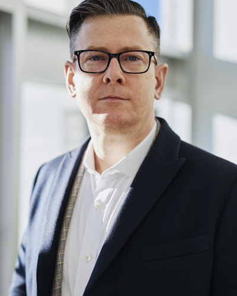
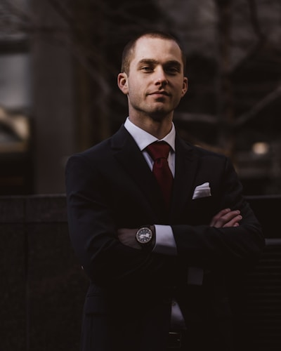

Founded in 2019. Headquartered in Denver, Colorado. Built around a conviction that the most compelling tourism investments are in the places the industry has overlooked.
Tias Capital was founded in 2019 in Denver, Colorado, by Marcus Ellery, a hospitality-focused private equity investor who had spent fifteen years acquiring and repositioning hotel assets across the Americas. The insight that launched the firm was simple but, at the time, contrarian: the highest-margin segment of tourism was shifting from accommodation to experience, and the capital markets had not caught up.
The traditional playbook -- buy an underperforming hotel, renovate rooms, raise ADR -- was producing thinner returns every cycle. Meanwhile, a new category of traveler was emerging, one willing to pay a premium not for thread count or lobby design, but for access to landscapes, activities, and stories they could not find anywhere else. Ellery saw an opportunity to build a firm around that shift.
Tias Capital closed its first fund in late 2019 at $120 million, backed by a small group of institutional investors and family offices who shared the conviction that experiential tourism was not a niche -- it was the future of the industry. The firm made its first acquisition in 2021, and within five years built a portfolio of five holdings across four states and Mexico, totaling approximately $320 million in assets under management.
We invest in destinations, not buildings. Every holding in our portfolio begins with the same question: does this place have a natural asset so distinctive that it cannot be commoditized? If the answer is yes, we build around it.
Our model is intentionally concentrated. We do not operate a diversified hospitality fund. We seek a small number of high-conviction positions in experiential tourism assets where we can control the development process end to end -- from site acquisition through design, construction, programming, and operations. This vertical integration allows us to build experiences that are architecturally and operationally tailored to the landscape, rather than adapted from a brand playbook.
We believe the addressable market for experiential tourism will continue to grow faster than traditional hospitality for at least the next decade. Demographic tailwinds -- including millennials and Gen Z prioritizing travel spending over material goods -- are well documented. What is less appreciated is how much of that demand remains unmet by existing supply. The gap between what travelers want and what most destinations offer is our opportunity.
Marcus Ellery launches Tias Capital. Fund I closes at $120 million, oversubscribed from a $90M target.
The firm acquires a 12-acre coastal parcel on the Sea of Cortez and begins development of its flagship eco-resort.
The 45-key eco-resort welcomes its first guests. Achieves 78% occupancy in its first full operating year.
Tias Capital acquires and expands an adventure park operator on the Big Island of Hawaii, entering the active ecotourism segment.
The firm's luxury glamping concept opens in Moab, Utah, establishing the "accessible luxury outdoors" category within the portfolio.
Tias Capital announces an $85 million, three-phase investment to develop an alpine ski resort on Palomar Mountain in San Diego County.
The firm announces plans for a membership-based beachfront social club on the Outer Banks of North Carolina, marking its East Coast expansion.
Every investment begins with the destination. We do not impose concepts on landscapes -- we listen to what a place already is and build infrastructure that amplifies it. The land, the water, the sky -- these are not backdrops. They are the product.
Tourism done poorly extracts from communities. Tourism done well creates durable economic value, protects natural assets, and gives local residents a stake in the outcome. We measure success not only in returns but in the long-term health of the places we develop.
Our portfolio includes investments that others passed on -- an eco-resort on an undeveloped cove, a ski resort in San Diego County. We do not seek consensus. We seek asymmetric opportunity backed by rigorous analysis.
A great location with poor operations is a wasted asset. We invest heavily in the teams, systems, and guest experience design that turn a promising site into a category-defining destination.

Marcus Ellery founded Tias Capital in 2019 after fifteen years in hospitality-focused private equity. He began his career in the real estate investment banking group at Goldman Sachs in New York, where he spent six years advising on hotel and resort transactions across the Americas. He subsequently joined Starwood Capital Group as a vice president, leading acquisitions of boutique hotel assets in Mexico and the Caribbean.
In 2017, while conducting due diligence on a distressed resort property in Baja California, Ellery spent a week living in a fishing village adjacent to the site. The experience -- the landscape, the community, the gap between what existed and what was possible -- reshaped his view of where the industry was headed. Two years later, he launched Tias Capital with a thesis built around that insight.
Marcus holds a B.A. in Economics from Dartmouth College and an M.B.A. from Columbia Business School. He sits on the advisory board of the Center for Responsible Tourism at the University of Colorado. Outside of work, he is an avid trail runner and has completed ultras on four continents.
Rachel Tsai oversees all investment activity at Tias Capital, including deal sourcing, underwriting, capital structure, and portfolio monitoring. She joined the firm in 2020 as its first institutional hire.
Prior to Tias Capital, Rachel spent twelve years at CBRE Investment Management, where she was a senior director in the hospitality and leisure real assets group. She led or co-led over $1.8 billion in hotel and resort transactions across North America. Earlier in her career, she was an analyst at JLL Hotels and Hospitality Group in San Francisco.
Rachel holds a B.S. in Finance from the University of Southern California and an M.S. in Real Estate Development from MIT. She is a member of the Urban Land Institute's Hospitality Development Council. She lives in Denver with her family and spends most weekends skiing or finding new restaurants to argue about.

David Nakamura leads all development and construction activity across the Tias Capital portfolio, from site planning and entitlement through design, construction management, and handoff to operations. He oversees the buildout of Mirage Mountain Resort and Solimar Beach Club -- the firm's two active development projects.
David brings over twenty years of experience in resort and destination development. He previously served as director of development at Replay Destinations, where he managed the planning and construction of master-planned resort communities in British Columbia and Montana. Before that, he held project management roles at Vail Resorts and Marriott International's luxury division, overseeing renovations and new-build projects totaling more than $400 million.
David holds a B.S. in Civil Engineering from the University of Washington and an M.B.A. from the University of Denver. He is a licensed Professional Engineer in Colorado and California. When he is not on a job site, he is usually restoring a 1978 FJ40 Land Cruiser that he insists is almost finished.
Elena Vargas leads sustainability strategy and implementation across all Tias Capital holdings. She is responsible for ensuring that each property meets or exceeds the firm's environmental commitments -- from carbon neutrality and waste diversion to community impact and ecological stewardship.
Before joining Tias Capital in 2021, Elena spent eight years at the World Wildlife Fund, where she managed sustainable tourism programs in Latin America. She previously worked as an environmental consultant at ERM, advising hospitality and real estate clients on environmental impact assessments and permitting.
Elena holds a B.S. in Environmental Science from Stanford University and an M.S. in Sustainability Management from Columbia University. She is a certified LEED Green Associate and a frequent speaker at hospitality industry conferences on the business case for sustainable operations. She grew up in Tucson, Arizona, and credits the Sonoran Desert with making her a lifelong advocate for landscapes that most people drive past without stopping.